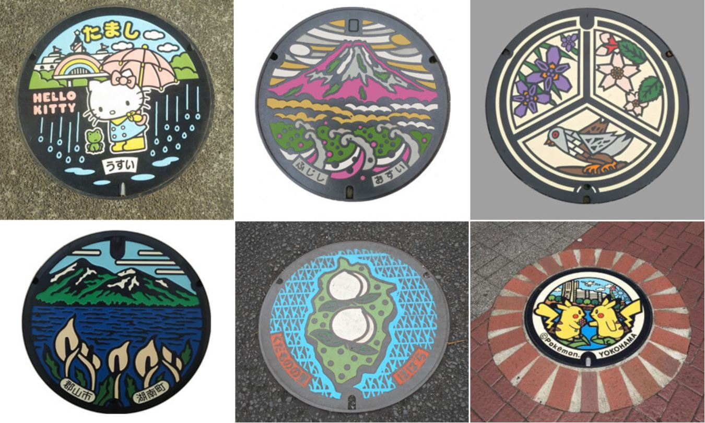

Japanese Bento Boxes (Lunch Boxes)
Bento, or box lunches, are one part of Japanese food culture. The act of eating Bento out of the house is a highlight to look forward to in the day, as they feature many different kinds of food arranged together in vivid colors. To prepare a Bento, you need a Bento box or container for holding the meal. Japan has a wide selection of lunch boxes, and these containers continue to evolve to be easier to use and to meet a diverse range of needs.
Designer Manhole Covers: A New Kind of Region-Specific Item
Manhole covers are a familiar sight around the world. Did you know that designer manhole covers in Japan are currently gaining attention as a new type of region-specific item? More and more people walk to visit different regions and see the manhole covers that show the individual characteristics of each area. This article looks at the world of designer manhole covers in Japan.